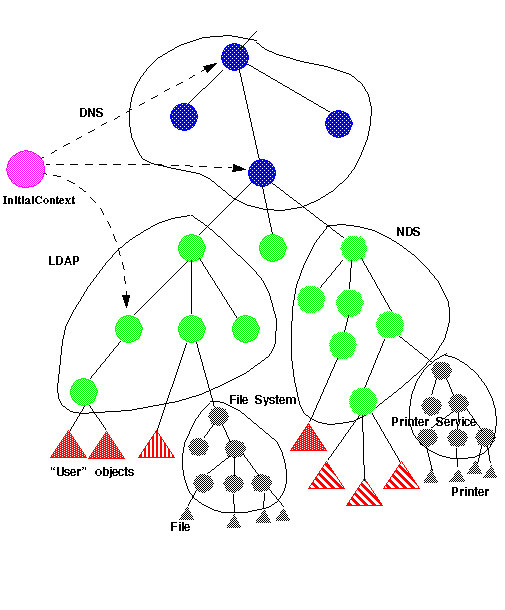

| CONTENTS | PREV | NEXT | JNDI API |
A directory service provides access to diverse kinds of information about users and resources in a network environment. It uses a naming system for the purpose of identifying and organizing directory objects to represent this information. A directory object provides an association between attributes and values. Thus, a directory service enables information to be organized in a hierarchical manner to provide a mapping between human understandable names and directory objects.
A fundamental facility in any computing system is the naming service - the means by which names are associated with objects, and by which objects are found given their names. In traditional systems, the naming service is seldom a separate service. It is usually integrated with another service, such as a file system, directory service, database, desktop, mail system, spreadsheet, or calendar. For example, a file system includes a naming service for files and directories; a spreadsheet has a naming service for cells and macros.
The computing environment of an enterprise typically consists of several naming services. There are naming services that provide contexts for naming common entities in an enterprise such as organizations, physical sites, human users and computers. Naming services are also incorporated in applications offering services such as file service, mail service, printer service, and so on. From a user's perspective, there exist several natural and logical relationships between these naming services. For example, it is natural to think of naming a variety of services such as files, mail, appointment calendar, and so on, in the context of a user. It is also natural to think of a user in the context of a department, within a division of an enterprise. Meaningful names can be composed using useful arrangements of naming services reflecting these relationships.
Every name is generated by a set of syntactic rules called a naming convention. An atomic name is an indivisible component of a name, as defined by the naming convention.
A compound name represents a sequence of zero or more atomic names composed according to the naming convention.
For example, in UNIX pathnames, atomic names are ordered from left to right, and are delimited by slash (`/') characters. The UNIX pathname
usr/local/binis a compound name representing the sequence of atomic names,usr,local, andbin. In names from the Internet Domain Name System (DNS), atomic names are ordered from right to left, and are delimited by dot (`.') characters. Thus, the DNS name sales.Wiz.COM is a compound name representing the sequence of atomic names,COM,Wiz,sales.The association of an atomic name with an object is called a binding.
A context is an object whose state is a set of bindings with distinct atomic names. Every context has an associated naming convention. A context provides a lookup (resolution) operation that returns an object, and may provide operations such as for binding names, unbinding names, listing bound names. An atomic name in one context object can be bound to another context object of the same type, called a subcontext, giving rise to compound names.
Resolution of compound names proceeds by looking up each successive atomic component in each successive context. The reader will find a familiar model in UNIX file naming, where directories serve as contexts, and pathnames may be compound names.
A naming system is a connected set of contexts of the same type (having the same naming convention) and providing the same set of operations with identical semantics.
A namespace is the set of all names in a naming system.
A composite name is a name that spans multiple naming systems. It consists of an ordered list of zero or more components. Each component is a name from the namespace of a single naming system.
For example, the name
jurassic.eng:/export/home/jdoe/.signatureis a composite name representation made up of a host name jurassic.eng from a host namespace, and the file name/export/home/jdoe/.signaturefrom a UNIX file namespace. Another example is the Internet URLhttp://www.moon.org/public/index.html, which is a composite name representation made up of the scheme-id http from the "URL scheme-id" namespace,www.moon.orgwhich is the DNS name of the machine on which the web server is running, andpublic/index.htmlwhich is a file name from a file namespace.Every name is interpreted relative to some context, and every naming operation is performed on a context object. A client can obtain an initial context object that provides a starting point for resolution of names.
The primary function of a naming system is to map names to objects. The objects can be of any type. A directory object is a particular type of object that is used to represent the variety of information in a computing environment. A directory object can have associated with it attributes. An attribute has an identifier and a set of values.
A directory object provides operations for creating attributes, adding, removing, and modifying attributes associated with the directory object. If we make a directory object also be a naming context, we can represent trees of directory information where the interior nodes not only behave like naming contexts but also contain attributes.
The Example of a Composite Namespace figure is an example used for illustrating several things.
Example of a Composite Namespace

- There can be multiple naming systems that can be represented by a composite namespace. In this case, DNS is used as the global naming system; one division uses NDS, while a second division uses LDAP.
- Each namespace has interior nodes that represent naming contexts, which may be directory objects as well. Leaf nodes can be objects of any type.
- The InitialContext is configured to have bindings to useful starting contexts in different naming and directory systems.
- Applications just see a composite namespace. They can access any type of object bound in any naming system in this arrangement.
- Services can incorporate their own namespaces which appear as first-class citizens in JNDI.
- Arbitrary directory services can be added and accessed without requiring client applications to be changed.
Uniform Resource Locators (URLs) are special composite names whose syntax are determined by the URL's definition. Clients of JNDI can use URLs to refer to arbitrary types of objects. For example, a client can use
nfs://nfs.sun.com/export/jndi/src/READMEto refer to a file object that is being accessed using the Network File System (NFS) protocol. Similarly, a client can perform directory operations on a directory object in an LDAP server using the URLldap://ldap.widget.com/cn=Jonathan,ou=marketing.To support composite names in general, JNDI defines a composite name syntax and utilities for processing composite names. This allows clients of JNDI to refer to objects using names that span multiple namespaces.
As the naming/directory service plays an increasingly important role in the computing environment, the need to provide administration and monitoring tools to help manage changes in the service also increases. For such tools and other applications, the traditional request/response style of interaction needs to be augmented with an asynchronous notification model that allows applications to register interest in changes in the service.